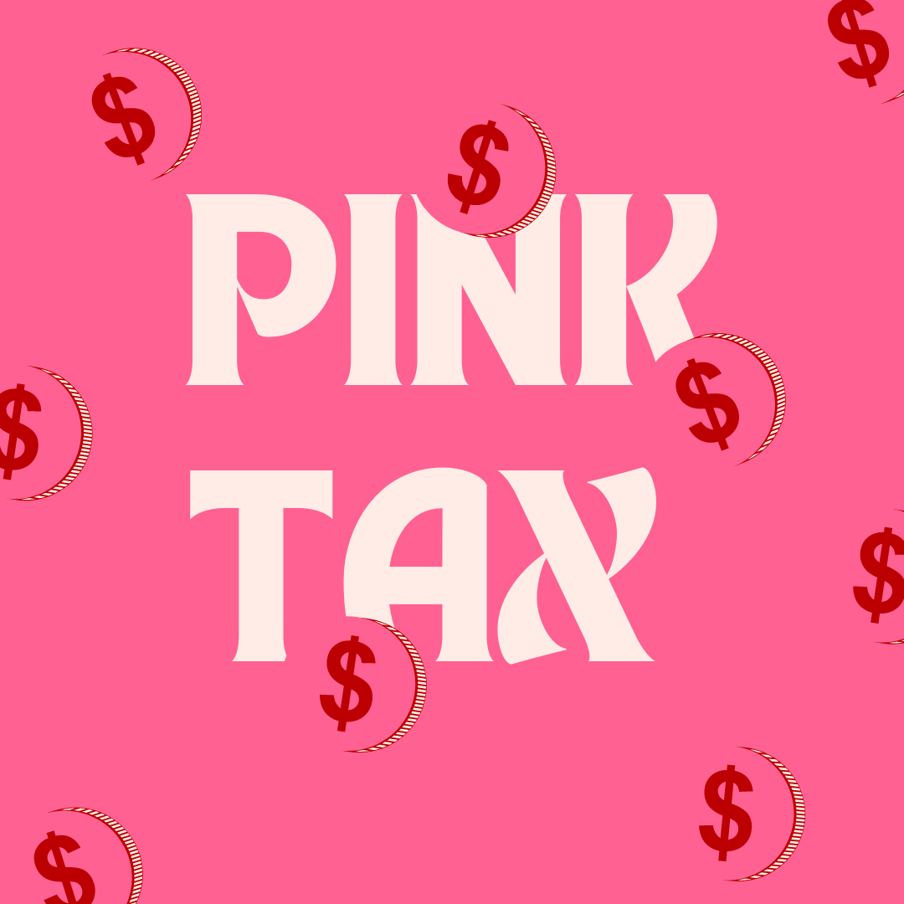
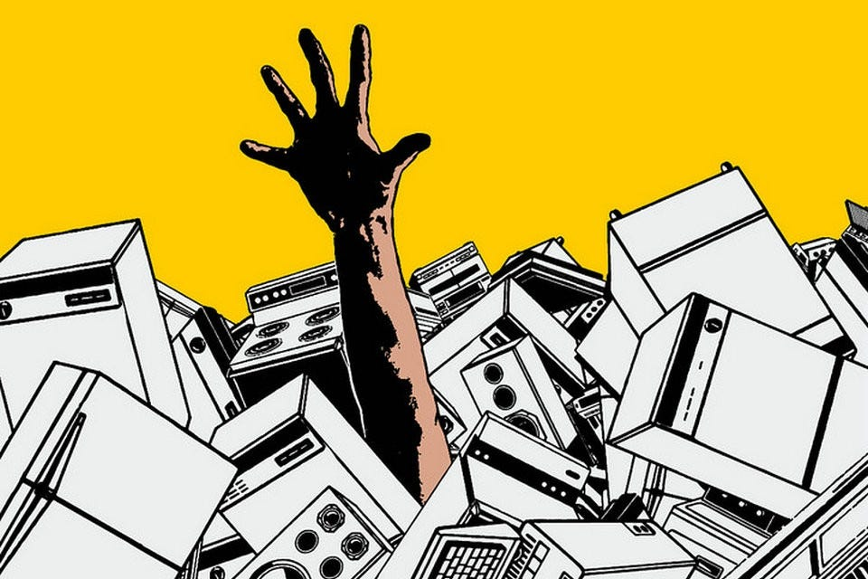
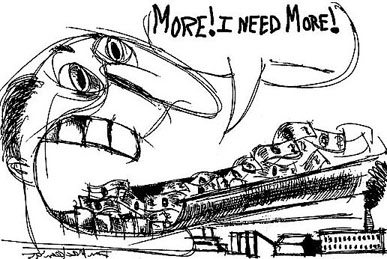

Pink Tax and Consumerism

What is pink tax?
-
Pink tax is not limited to woman's hygine products - it's also found
in the inflated prices of other goods as well as services marketed
to women. (Source 1)
Stats/Facts
It tends to be 7% more expensive for products marketed to woman;
increased coverage of insurance. (Source 2)
Feminine products marketed towards woman tend to be more expensive
compared to products marketed for men. (e.g. toothbrushes, razors,
feminine hygine products, etc..)
What is Consumerism?

- Drive to consume and buy goods (Source 3)
-
Not inherently bad in itself but rather combined with predatory
practices and overconsumption then it can become damaging to
individuals and society broadly.
What is extreme-consumption/over-consuption?
-
overconsumption is characterized by excessive buying and material
possesions. (e.g. collecting stanley cups, tote bags, clothes, etc.)
Why is extreme consumerism bad?

- it drives resource depletion, pollution and climate change.
-
The production, transport, and disposal of excess goods generate
massive amounts of waste and greenhouse gas emissions.
-
It fuels tghe exploration of low-wage workers in developing contries
to produce cheap goods. the consuption habits of the wealthy
disproportionately harm the planet's poorest communities.
-
it premotes a "Hedonic treadmill" where the temporary happiness from
new purcheses fades quickly, leading to a cycle of chronic
dissatisfaction, finantial stress, and anxiety.
Action
- Knowning about it and spreading knowledge about the topic
- Personal change in habits
- Try to push for legistlation to try and ameliorate the issue
-
Federal Trade Commission. related to the predictice priceing where
corporations target individuals and change prices depending on their
information/pain points. could use similar approach.